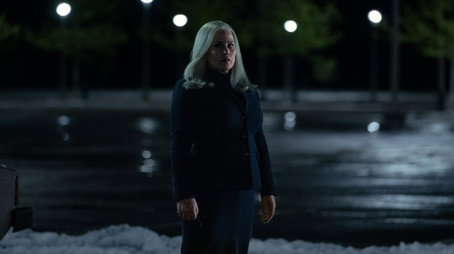
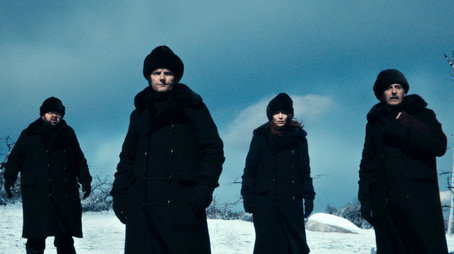
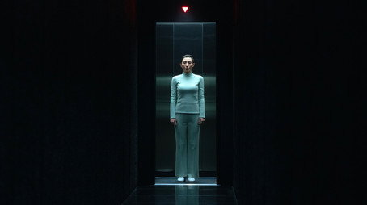
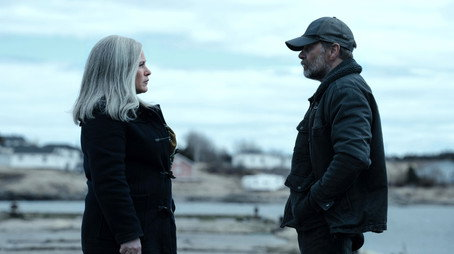

سیستم طراحی رولوانا
ساخته از دو صفحهی پذیرفتهشده: خانه (دور ۶۳) و صفحهی فیلم و سریال (دور ۵۸). این برگه همان فایلهای CSS را میخواند که آن دو صفحه با آن ساخته شدهاند، و هر جزء اینجا همان نشانهگذاری است که روی صفحه رندر میشود؛ پس جزء روی برگه همان جزء روی صفحه است.
اجزای صفحهی فیلم و سریال
از صفحهی فیلم و سریال (دور ۵۸)، روی همان rollvana-tokens.css و rollvana-base.css و با rollvana-title.css. رنگ عنوان (--acc) فقط نشانههای کوچک را رنگ میکند (R3)؛ دکمهی اصلی سفید است (R30).
.hdr .hlogo · .top .tc .row1 .play .sc2لوگوی فیلم وسط سرصفحه (R8، R29)؛ نوع و ژانر، نام فارسی، نام انگلیسی، سال · مدت · سن، IMDb و RT و Metacritic، پخش سفید با «لیست» و «نشان» شیشهای، پسندیدم/نپسندیدم (R24، R25)

.top .tcادامهی تماشا با قسمت و پیشرفت
.sec.story .sec.lead .sec.aud · .split .spy .chaps .chap .chhفهرست کناری فصلها به ترتیب، محتوای هر فصل زیر سرش با خط راهنمای آرام (R26)؛ قسمتها، دانلود، تریلر، درباره، موسیقی، نظرها، مشابهها و فهرست کاربران (R27، R28، R30، R31، R38)کارمندان شرکت لومن با یک عمل جراحی، خاطرات کار را از زندگی شخصیشان جدا کردهاند: در دفتر هیچچیز از بیرون به یاد نمیآورند و بیرون هیچچیز از دفتر. مارک، که این کار را بعد از مرگ همسرش انتخاب کرده، کمکم میفهمد پشت این دیوارهای سفید چه میگذرد.
نظر مخاطبان و منتقدان
بیشتر بینندگان این قسمت را از بهترینهای سریال دانستهاند و پایانش را تکاندهنده خواندهاند؛ چند نفری هم شروعش را کند دیدهاند.
تعریف کردهاند
- پایان غافلگیرکننده
- بازی بریت لوئر در دو نقش هلی و هلنا
- فضای برفی، متفاوت با دفتر همیشگی
ایراد گرفتهاند
- شروع کمی کند
- چند شوخی که جا نمیافتد
- سؤالهایی که باز هم بیجواب میماند
منبع: IMDb و Rotten Tomatoes · بهروز ۷ آبان · بدون اسپویل
قسمتها
مارک به شرایطی تازه به کار برمیگردد. رازهایی از دنیای بیرون آشکار میشود.
مارک به معنای پیامی فکر میکند که به دستش رسیده.

قسمت ۳بخش به رقابتی ناخواسته کشیده میشود. هلی رفتاری متفاوت دارد.

قسمت ۴سفر کاری به یک درهی برفی حقایقی را رو میکند که کسی منتظرش نبود.
 قسمت ۵
قسمت ۵مارک و هلی با پیامدهای سفر روبهرو میشوند. میلچیک زیر فشار است.
شامی رسمی در خانهی خانوادهی ایگان همه را در موقعیتی خطرناک قرار میدهد.

قسمت ۷گذشتهی گما بالاخره روشن میشود.

قسمت ۸کوبل به جایی برمیگردد که همهچیز از آنجا شروع شد.
دانلود
تریلرها
درباره
مشخصات
- سازنده
- دن اریکسون
- کارگردانها
- بن استیلر، آئوفه مکآردل
- موسیقی
- تئودور شاپیرو
- شبکه
- اپل تیوی پلاس
- کشور
- آمریکا
- زبان اصلی
- انگلیسی
- شروع پخش
- ۲۸ بهمن ۱۴۰۰
- فصلها
- ۲ فصل، ۱۹ قسمت
- هر قسمت
- حدود ۵۰ دقیقه
- ردهی سنی
- +۱۶
- جوایز
- برندهی جوایز امی، از جمله بهترین بازیگر زن نقش اول
- صدا
- دوبله فارسیصدای اصلی
- زیرنویس
- فارسیانگلیسی
بازیگران
موسیقی
نظرها
نظر کاربران۶ نظر
ایدهی جدا کردن خودِ درونی از خودِ بیرونی هنوز ترسناکترین ایدهای است که این چند سال توی یه سریال دیدم. آدم از خودش میپرسه اگه جای مارک بودم، من هم این کار رو میکردم؟
قسمت اول رو که دیدم تا صبح خوابم نبرد. اون راهروهای سفید لومن آدم رو خفه میکنه.
آخر فصل ۲ که مارکِ درونی بهجای گما هلی رو انتخاب میکنه و برمیگرده توی لومن، یعنی فصل سوم دعوای دو تا مارک با همه.
بازی بریت لوئر توی نقش هلی عالیه؛ از یه نگاهش میفهمی هلیِ درونی جلوته یا اون یکی.
آدام اسکات هم همینطور. مارکِ بیرونی خسته و غمگینه، مارکِ درونی انگار تازه به دنیا اومده.
فصل دوم یه کم کند شروع شد، ولی از قسمت درهی وو به بعد دیگه نمیشه ولش کرد. فقط کاش این بار سه سال منتظر فصل بعد نمونیم.
مشابه

#s-dl .dl6واردشده بدون اشتراک: کاشیهای کیفیت محو پشت قفل، با «خرید اشتراک»